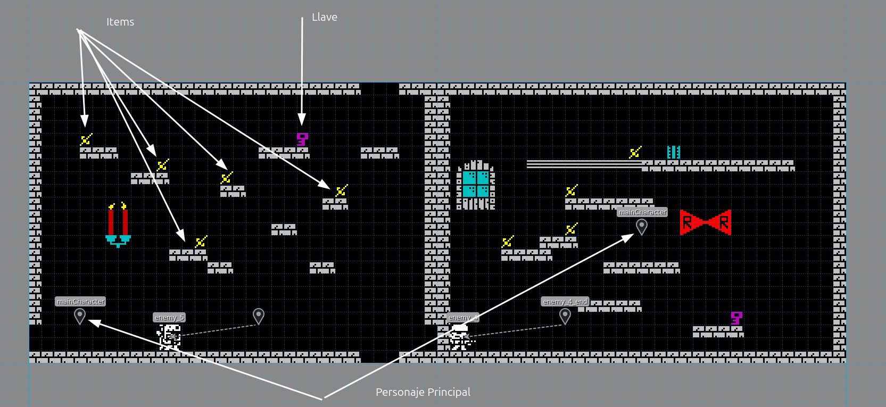

Configuración de tipos de juego
Toda la información sobre la personalización del comportamiento del juego
Configuración general en atributos del mapa (tiled)
Modo de visualización
La vista del juego se puede configurar de 2 maneras usando gameView
- side hará que tu juego sea un plataformas 2d con vista lateral
- overhead indica al motor que use vista "cenital" para tu juego (tipo zelda)
Entre ambos juegos hay diferencias como el salto o el tipo de movimiento del personaje protagonista. El objetivo en ambos será el mismo.
Modo de juego
Además de cómo visualizar el juego se puede indicar la dinámica del mismo
arcadeMode permite activar dicho modo para nuestro juego. La dinámica del juego será un pelín distinta:
- En este modo hay que "pasarse" cada pantalla para pasar a la siguiente, no se puede ir a la pantalla siguiente y volver a la anterior. Son independientes
- Para diseñar las pantallas en Tiled lo haremos una detras de otra en una sóla línea.
- Para superar una pantalla habrá que recoger todos los items y al hacerlo aparacerá la llave para pasar a la siguiente pantalla
- Se pueden añadir tantos items como se quiera en la pantalla.
- Tendremos que definir en cada pantalla donde aparece el personaje (mainCharacter)
- No es necesario definir suelo y paredes en la pantalla para limitar la misma, si el personaje atraviesa los límites, aparecerá en el lado opuesto.

levelsMode indica al motor que debe comportarse como un juego por niveles. La dinámica del juego será la siguiente:
- En este modo hay que "pasarse" cada pantalla para pasar a la siguiente, no se puede ir a la pantalla siguiente y volver a la anterior. Son independientes
- Para diseñar las pantallas en Tiled lo haremos como en el modo normal sólo que cada fila de pantallas será un nivel.
- Para superar un nivel deberás coger una llave y abrir una puerta. El sitio donde esté da igual.
- El inicio del personaje (mainCharacter) se deberá hacer únicamente en la primera pantalla y será el mismo para todas por lo que hay que tener un hueco reservado para el inicio en todos los niveles
- En este modo si el personaje cae por abajo del nivel recibirá daño y rebotará.
- Por arriba no se podrá salir el personaje
- Por último, hay que tener en cuenta que tanto la primera pantalla como la última de cada nivel tienen que tener muros para que no se salga el personaje o fallará el juego (ya puedes hacer tu ghost'n'goblins)